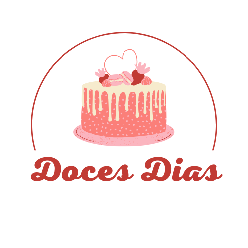
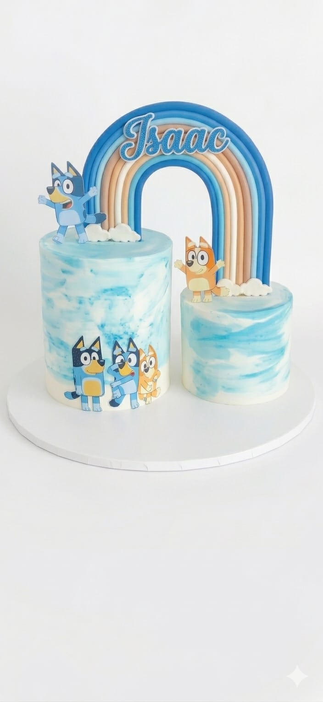
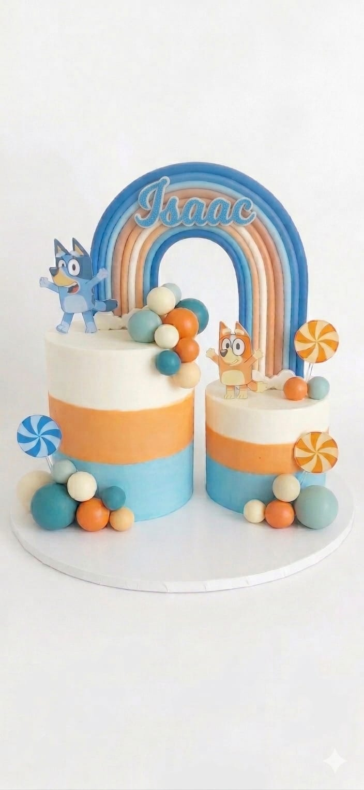
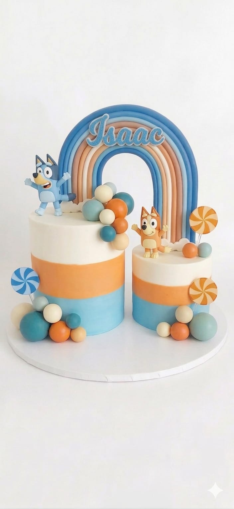

Nome: Jaime
Aniversariante: Isaac (1 ano)
Data da festa: 25 de julho de 2026
Nº convidados: 40 pessoas
Tema: Bluey
Vantagens de sabores: Ao optar pelo design de dois bolos unidos, poderá escolher dois sabores diferentes (um para cada bolo), oferecendo mais variedade aos seus convidados sem qualquer custo adicional.
Estrutura e design: O valor do orçamento é definido pelo trabalho artístico e pelo número de fatias. Assim, o valor mantém-se quer opte por um formato de um bolo único ou pela estrutura de dois bolos unidos, uma vez que a complexidade e o tempo de execução são idênticos.
Confirmação: Este orçamento tem validade de até dia 15 de maio de 2026.
Pagamento: 50% do valor após confirmação de encomenda via MB Way ou dinheiro; o restante é pago no ato da entrega.
Entrega: Rua Cidade Vila Cabral
As imagens são meramente ilustrativas. Cada bolo é uma peça artística única feita manualmente para a ocasião.
Estrutura: Dois bolos redondos de alturas diferentes unidos (Design moderno e minimalista).
Dimensões: 20cm + 15cm diâmetro (aprox. 10cm altura cada).
Cobertura: Buttercream suíço artesanal com efeito espatulado em branco e azul.
Decoração: Toppers artesanais personalizados desenvolvidos manualmente.
Oferta: Vela de aniversário.

Estrutura: Dois bolos redondos de alturas diferentes unidos.
Dimensões: 20cm + 15cm diâmetro (aprox. 10cm altura cada).
Cobertura: Buttercream suíço com acabamento perfeito e degradê (branco, laranja e azul).
Decoração: Toppers artesanais e cascatas de esferas de chocolate em tons coordenados.
Oferta: Vela de aniversário.

Estrutura: Dois bolos redondos unidos (Alta Confeitaria).
Dimensões: 20cm + 15cm diâmetro (aprox. 10cm altura cada).
Cobertura: Integral em pasta de açúcar premium com degradê (branco, laranja e azul).
Decoração: Modelagem manual 100% comestível: personagens, arco-íris, chupa-chupas e elementos esculpidos.
Oferta: Vela de aniversário.
